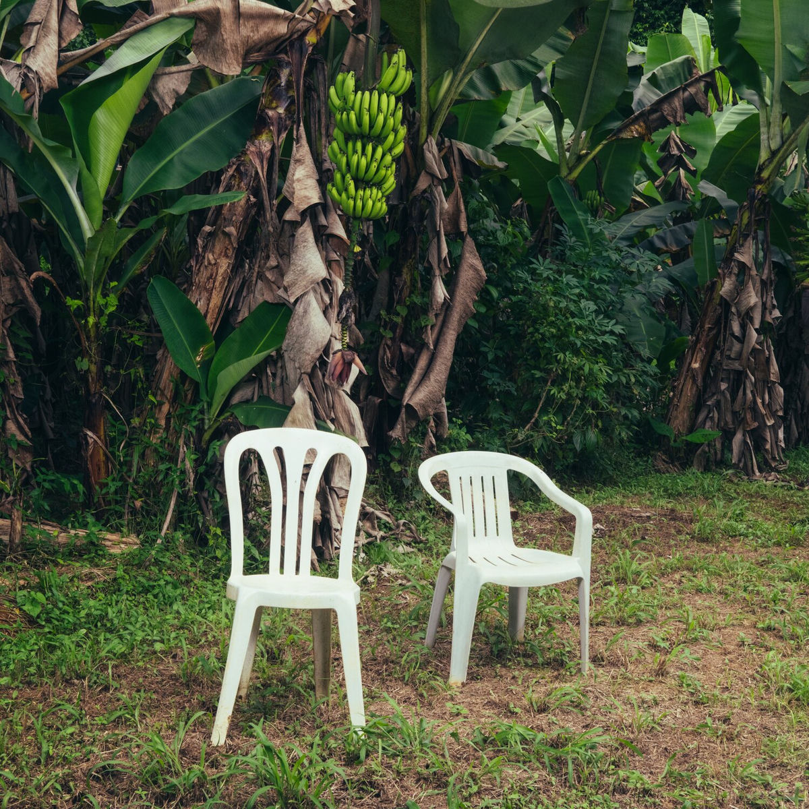
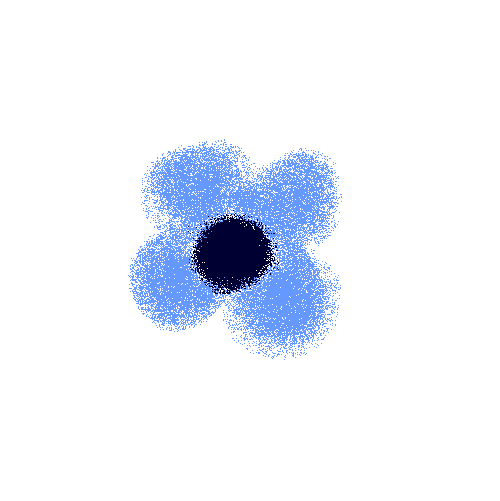
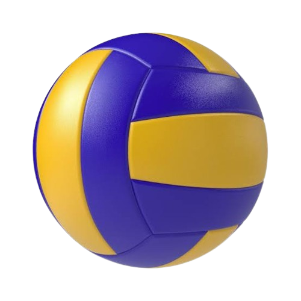
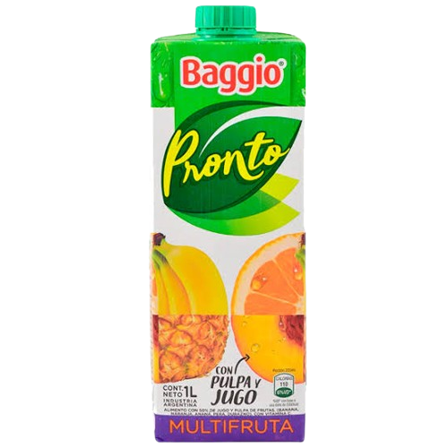
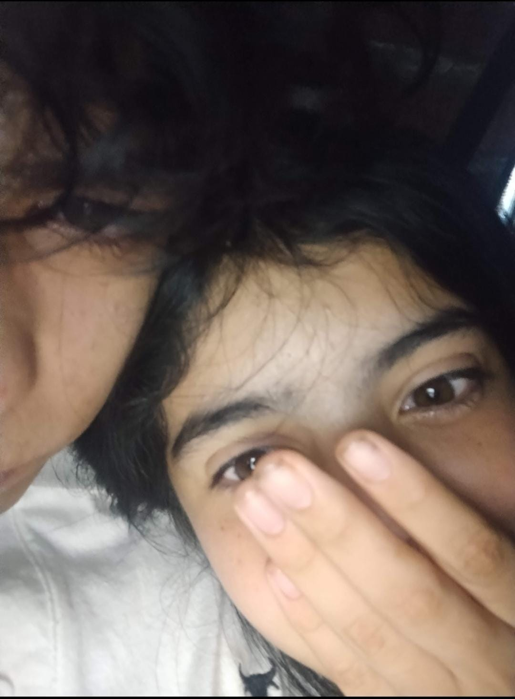
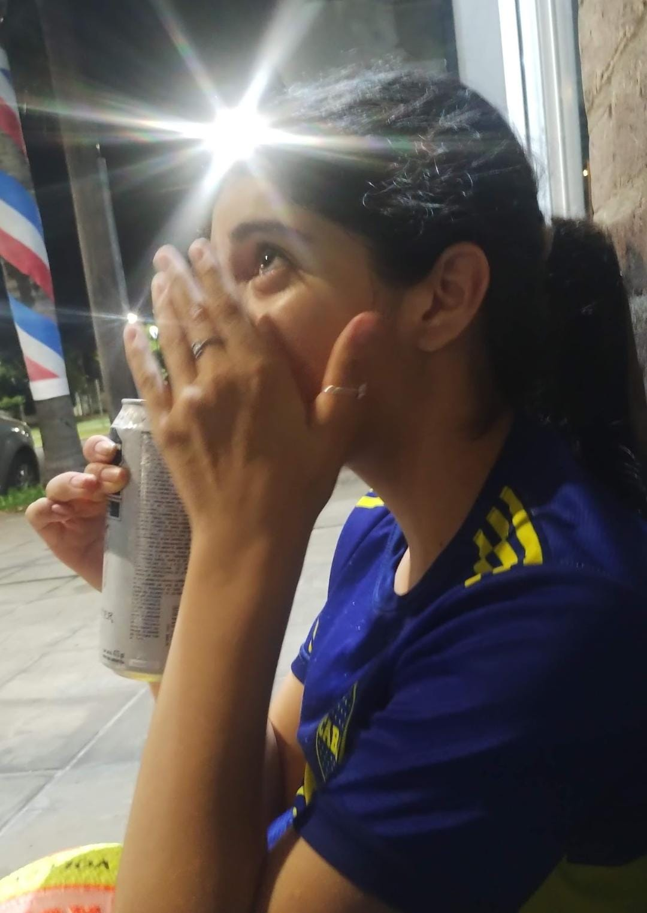
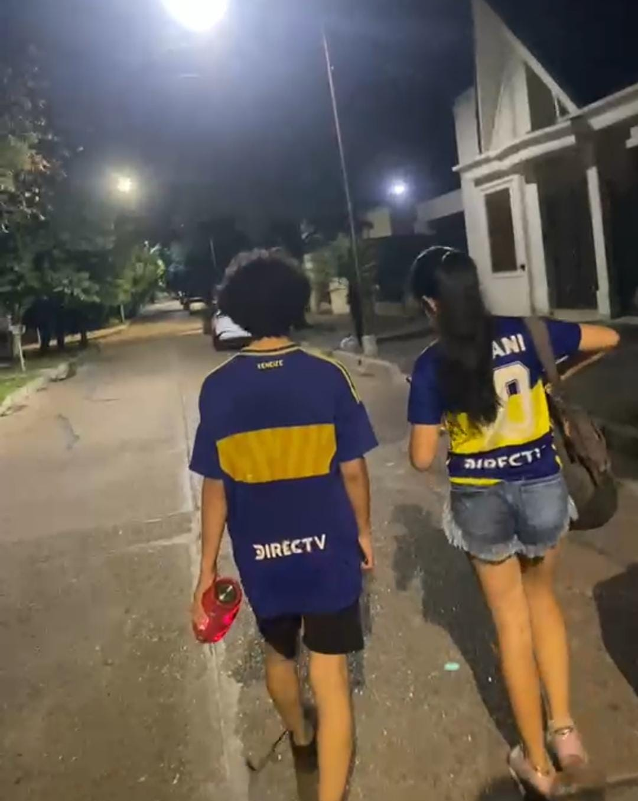
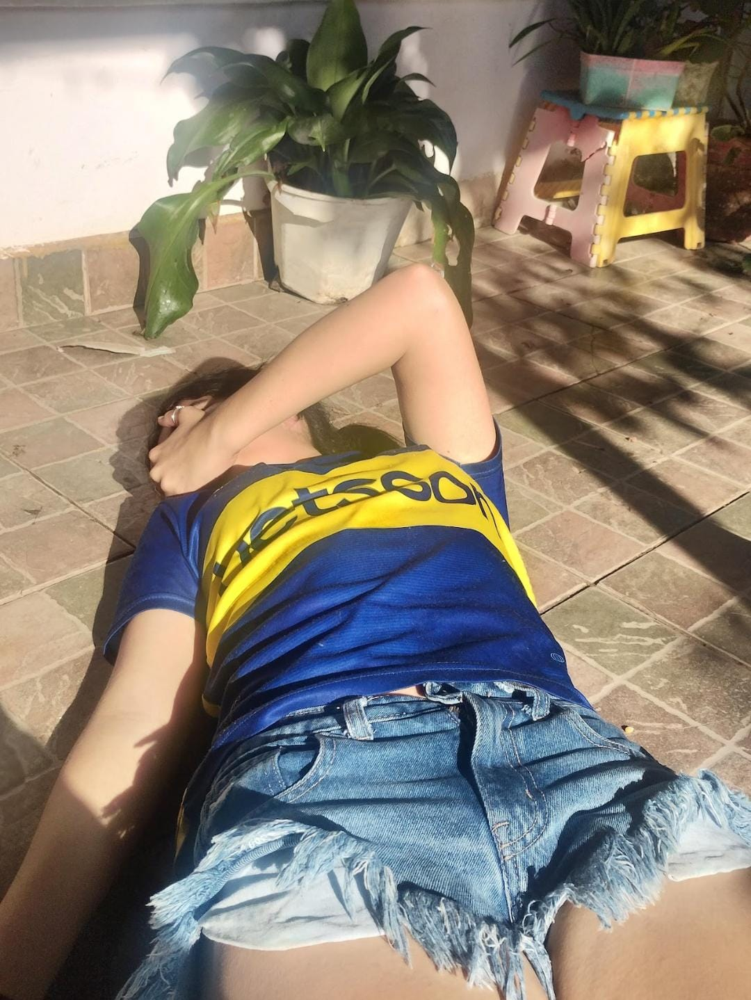
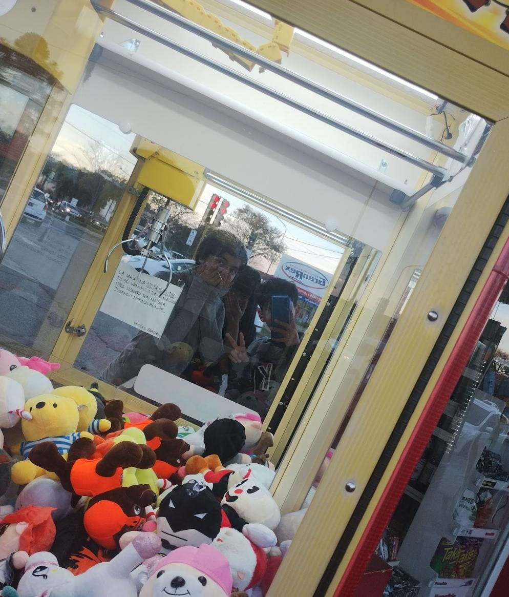

para vos ✨
no sos invisible para mi
select an option
hecho con cariño para vos 🤍

Bad Bunny
para vos ✨
select an option
hecho con cariño para vos 🤍



Hablar de valentina es complicado, no porque sea dificil de entender si no porque intentar explicar con palabras a las personas asi se siente casi como una injusticia a lo que genera. alguien tan directo como yo, conoce casi todas sus partes y formas de reaccionar, yo la he visto enojada, feliz, tranquila, inquieta, nerviosa, indiferente, en extasiss, la conozco bastante y puedo decir con certeza total que es de las personas con menos maldad que existen, faltante total de maldad. eso no quiere decir que ella aveces no se exalte y te pegue un grito, si no que quiere decir que no lo hara con la intencion de lastimarte, no puede, y si pudiera se arrepentiria. Valentina tiene tantas cosas lindas que si me pongo a enlistarlas no terminaria nunca literalmente. tiene todavia esa escencia y bondad que solo tienen los niños, y tiene esas cosas inentendibles que solo tienen los adolescentes. es una mezcla inexplicable de virtudes incertidumbres e inseguridades, es como si una mujer y un hombre tuviera un hijo xdxdlol, na joda es como si mezclaras la nostalgia y ternura de Benedetti con la soledad de Pizarnik, la angustia existencial de sylvia plath con la euforia y esperanza de whitman, ese pequeño remordimiento que tenia alghieri y los celos de Shakespeare. es todo eso y mucho mas que no puedo explicar pq aun no soy tan buen poeta. si en este instante me haces resumirla con una frase diria "Llena de Magia" porque eso es lo que es, magia pura, cada risa, cada reaccion, cada locura, cada chiste, cada pirueta innecesaria, todo en ella tiene esa magia. yo suelo ser bastante egocentrico pq se que en el fondo soy increible, si yo fuese ella, en mi vida me dignaria a arriesgar algo por los demas o a siquiera derramar una pequeña lagrima porque tendria MUY en cuenta lo increible que es. si yo soy la perla, ella seria todo lo contrario a mi, es encantadora, medalla olimpica de oro a la mas dulce, top 1 en hacer que este orgulloso cada dia, merece cada cosa buena que le pasa y todo lo malo es una injusticia injustificada. Pasar con ella un ratito es lo mejor que le podria pasar a cualquiera, Greenflag andante, tremenda obra de arte viva por dios el trato que recibe de los demas todos los dias es poco comparado con lo que merece, me entiendes? merece eso y mucho mas. fijate que la lealtad y la fidelidad es un idioma que SI entiende :v cuestion que valentina es de esas personas que brillan con una luz propia envidiable y de esas personas que te alegran el alma. Gracias por la entrevista señor plantin. :) porque no decis nada? hola?? estoy hablando solo? PORQUE EL GOBIERN-

Recuerdo #1 📌
Recuerdo #2 📌
Recuerdo #3 📌
Recuerdo #4 📌
Recuerdo #5 📌Apoyá el cursor en los bordes de la pantalla para ver las fotos, o primero leé el texto, o hacé lo que quieras. Primero leé el texto y después deslizá las polaroids de abajo para ver las fotos, o hacé lo que quieras.
Hay miles de cosas que me hacen acordar a vos, ya sea en individual o en grupo con las chicas. Hay sensaciones que me traen recuerdos varios de vos siendo vos y es lindo. Aunque ahora que estoy re lejos es medio feo porque te extraño. Ya sean canciones, como todo el álbum DtMF, o algunas de Tan Biónica, Airbag... Cuando pienso en vóley pienso en jugar con vos y con los demás. Hasta la sensación de extrañar se siente como vos, porque vos siempre extrañas, sos muy nostálgica como yo. Cuando camino (una vez cada mil que salgo del psiquiatra) no puedo no imaginar lo lindo que sería que estés vos y los demás. tengo la galeria llena de recuerdos que llevo conmigo en el corazon y que son para mi una curita al alma y un motor para aguantar esto. se que falta poco para que vuelva y lo primer que quiero hacer es verte a vos y a los demas, por ahi sueño con vos y con los demas y se siente tan raro despertarse confundido y ver que estas muy lejos de casa, es horrible saber que la pasas mal y que no puedo nsiquiera juntarme un finde para darte un abrazo, pero me quedo tranquilo sabiendo que cada vez falta menos, y ojala estes preparando las piernas para caminar como animal. sigo teniendo las mismas ganas de verte y espero vos tambien quieras verme. espero me quieras en general no?.. no???? Cuestión que: "No sé qué está pasando con vos, y simplemente pasa que tengo ganas de verte".
Tocá el botón de abajo cada vez que necesites leer algo lindo.